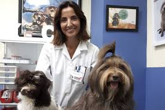
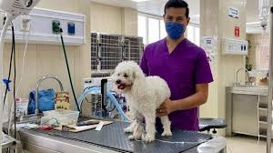
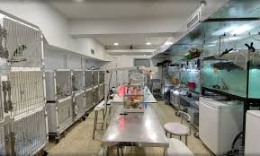
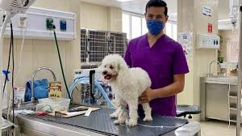
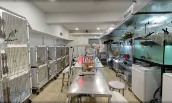

Nuestra Historia
Veterinaria Huellita nació en 2010 con el objetivo de ofrecer atención médica de calidad y con calidez a todas las mascotas de nuestra comunidad. Empezamos como un pequeño consultorio y hoy contamos con modernas instalaciones y un equipo profesional altamente capacitado.
Nuestro Equipo Médico
Dr. Juan Pérez
Medicina Interna

Dra. María López
Cirugía Veterinaria
MVZ. Carlos Hernández
Nutrición y Bienestar
Nuestras Instalaciones
Contamos con espacios modernos, cómodos y equipados para ofrecer el mejor servicio a tu mascota.
 


